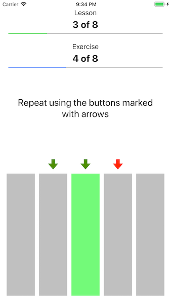

Learn to Improvise
Perhaps surprisingly, but just tapping the buttons in our app you'd pump up your improvisation skills on any musical instrument, and, perhaps less surprisingly, you'd master one of the most important additional skills for a musician—the minor pentatonic.
When you complete the training, the language of the minor pentatonic will become another language you'd speak fluently. This surely will come handy when you get a chance to improvise or learn your favorite solos, be that on a guitar, a piano, or another instrument.
What is a pentatonic? It's a scale of five notes that connects the music cultures of all of the continents. Why is it minor? Because the notes are the building blocks for the minor chords.